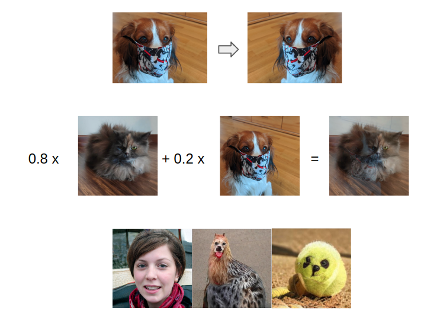
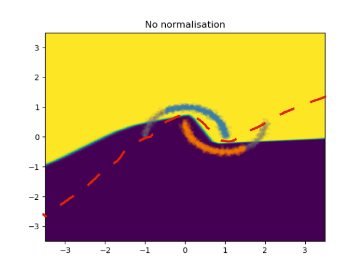
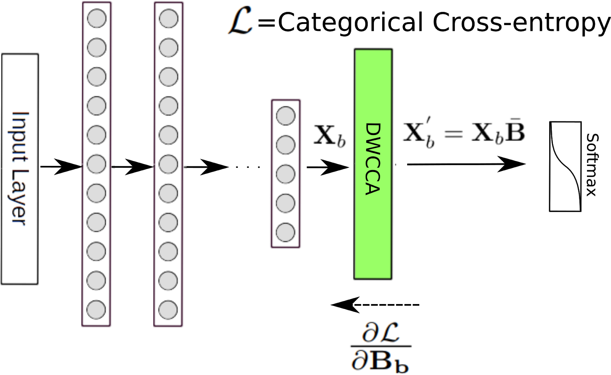

Introduction
I am a Postdoctoral Research Scientist at the Linz Institute of Technology (LIT) AI LAB, and a member of Google Cloud Research Innovators. I received my PhD degree in 2019 on Representation Learning and Inference from Signals and Sequences. In 2014, I joined the Institute of Computational Perecption at the Johannes Kepler University of Linz, where I pursued my PhD.
Research Interests
-
Causal Contextual Reinforcement Learning
Building agents that can reason, and discover the causal factors of the world.
-
Understanding Deep Learning
Understanding how deep learning works, and how the underlying building blocks that make DL successful function.
-
Robustness and Generalisation in DL
Adversarial Machine Learning, Learning under Distribution mismatch, Robustness in DL
-
Representation Learning
Learning robust representations from genomic data, molecules, audio sequences and images.
-
Generative Modelling
GANs, VAEs
Selected publications
Here is a list of my selected publications.
- H. Eghbal-zadeh, F. Henkel, G. Widmer, Context-Adaptive Reinforcement Learning using Unsupervised Learning of Context Variables, In Proceedings of Machine Learning Research, NeurIPS 2020 Workshop on Pre-registration in Machine Learning, PMLR 148:236-254, 2021. [paper][blog post]
- H. Eghbal-zadeh, F. Henkel, G. Widmer, Learning to Infer Unseen Contexts in Causal Contextual Reinforcement Learning, SSL-RL Workshop, ICLR, 2021. [paper][environment]
- H. Eghbal-zadeh, F. Henkel, G. Widmer, Context-Adaptive Reinforcement Learning using Unsupervised Learning of Context Variables, Pre-registration Workshop, NeurIPS, 2020. [blog post]
- H. Eghbal-zadeh, K.Koutini, V. Haunschmid, P. Primus, M. Lewandowski, W. Zellinger, G. Widmer, Adversarial Robustness in Data Augmentation, Towards Trustworthy ML: Rethinking Security and Privacy for ML, ICLR Workshop, 2020. [talk]
- H. Eghbal-zadeh, Representation Learning and Inference from Signals and Sequences, PhD Thesis, 2019.
- H. Eghbal-zadeh, W. Zellinger, G. Widmer, Mixture Density Generative Adversarial Networks, CVPR, 2019. [paper] [code]
- H. Eghbal-zadeh, M. Dorfer, G. Widmer, Deep Within-Class Covariance Analysis for Robust Audio Representation Learning, Neural Information Processing Systems, Interpretability and Robustness in Audio, Speech, and Language Workshop, 2018. [paper] [slides]
- H. Eghbal-zadeh, L. Fischer, N. Popitsch, F. Kromp, S. Taschner-Mandl, T. Gerber, E. Bozsaky, P. F. Ambros, I. M. Ambros, G. Widmer, B. A. Moser, DeepSNP: An End-to-End Deep Neural Network with Attention-Based Localization for Breakpoint Detection in Single-Nucleotide Polymorphism Array Genomic Data, Journal of Computational Biology, 2018. [paper] [code]
Talks
2020
Title of the talk: CP lecture serries
Description: Public lecture at the CP lecture serries.
Title of the talk: On the Inductive Biases in Data Augmentation and Adversarial Robustness.
Description: Talk at the Amirkabir Artificial Intelligence Summer Summit (AAISS) 2020.

Title of the talk: Adversarial Robustness in Data Augmentation.
Description: Talk at the Towards Trustworthy ML: Rethinking Security and Privacy for ML, ICLR 2020 Workshop.
2019
Title of the talk: Representation Learning under Incomplete and Imprecise Information Conditions.
Description: Talk at the Intelligent Autonomous Systems Group of the Computer Science Department of the Technische Universitaet Darmstadt.

2018
Title of the talk: Deep Within-Class Covariance Analysis for Robust Deep Audio Representation Learning.
Description: Talk at the Interpretability and Robustness in Audio, Speech and Language, NeurIPS 2018 Workshop.

Tweets
Here are my latest tweetsMentoring
If you are from an under represented group, and need help with ML research or similar topics, you can book a mentoring session with me.
Contact
You can reach me on twitter or via email. If you are interested in collaborations or discussions about my research, don't hesitate to contact me!